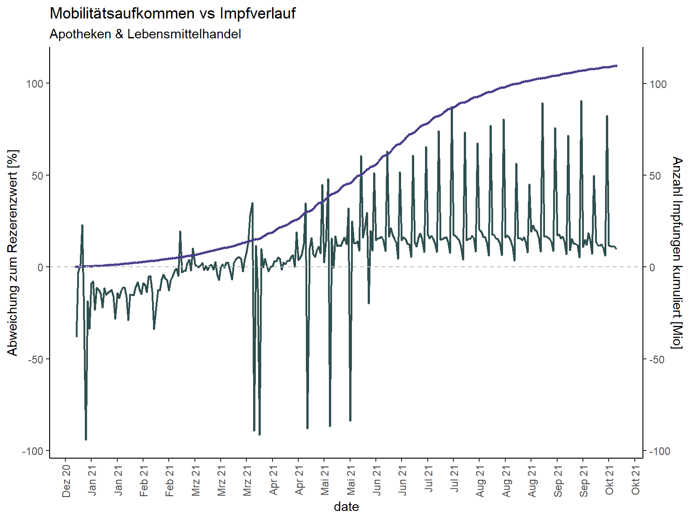

Datenanalyse
Nadja Herrmann
1 Konzeptionelles Vorgehen

Abbildung 1: Konzeptionelles Vorgehen, Eigene Darstellung 2021
2 Notwendige Pakete laden
Für dieses Notebook werden die folgenden Pakete benötigt:
library(tidyverse)
library(ggplot2) #Visualisierung
library(plotly)
library(scales)
library(lubridate)
library(DT)3 Daten importieren
Der im Abschnitt Datenintegration erstellte Datensatz mobility_vaccine wird für dieses Notebook Datenanalyse herangezogen.
mobility_vaccine <- read.csv("../Website/Daten_Output/Mobility_vaccine.csv")3.1 Beschreibung des finalen Datensatzes
glimpse(mobility_vaccine)## Rows: 27,888
## Columns: 17
## $ X <int> 1, 2, 3, 4, 5, 6, 7, 8, 9, 10, 11, 12, 13, 14, 1~
## $ date <chr> "2020-12-27", "2020-12-27", "2020-12-27", "2020-~
## $ Bundesland <chr> "Baden-Württemberg", "Baden-Württemberg", "Bayer~
## $ ID <int> 8, 8, 9, 11, 12, 4, 4, 2, 6, 6, 13, 3, 5, 5, 7, ~
## $ Impfstoff <chr> "Comirnaty", "Moderna", "Comirnaty", "Comirnaty"~
## $ Impfserie <int> 1, 1, 1, 1, 1, 1, 1, 1, 2, 1, 1, 1, 1, 2, 1, 1, ~
## $ Anzahl <int> 2610, 3, 3606, 1770, 28, 3, 511, 443, 2, 2712, 3~
## $ Einwohner_2020 <int> 11103043, 11103043, 13140183, 3664088, 2531071, ~
## $ country_region_code <chr> "DE", "DE", "DE", "DE", "DE", "DE", "DE", "DE", ~
## $ country_region <chr> "Germany", "Germany", "Germany", "Germany", "Ger~
## $ iso_code <chr> "DE-BW", "DE-BW", "DE-BY", "DE-BE", "DE-BB", "DE~
## $ retail_and_recreation <int> -68, -68, -68, -74, -61, -77, -77, -75, -68, -68~
## $ grocery_and_pharmacy <int> -39, -39, -41, -39, -37, -39, -39, -32, -40, -40~
## $ parks <int> -5, -5, -5, -38, -12, -45, -45, -50, -12, -12, -~
## $ transit_stations <int> -53, -53, -55, -56, -41, -61, -61, -61, -56, -56~
## $ workplaces <int> -30, -30, -27, -29, -20, -30, -30, -31, -27, -27~
## $ residential <int> 8, 8, 8, 8, 6, 8, 8, 8, 8, 8, 6, 8, 8, 8, 8, 8, ~excluded_vars <- c("X", "country_region_code", "country_region", "iso_code")
mobility_vaccine <- select(mobility_vaccine, -excluded_vars)## Note: Using an external vector in selections is ambiguous.
## i Use `all_of(excluded_vars)` instead of `excluded_vars` to silence this message.
## i See <https://tidyselect.r-lib.org/reference/faq-external-vector.html>.
## This message is displayed once per session.no_cols<- ncol(mobility_vaccine)no_rows<- nrow(mobility_vaccine)Der finale Datensatz mobility_vaccine besteht aus 13 Spalten und 27888 Zeilen. In der folgenden Tabelle werden die Variablen beschrieben sowie ihre Merkmale benannt.
| Variable | Beschreibung |
|---|---|
| date | Datum |
| bundesland | Bundesland |
| ID | Bundesland_ID |
| Impfstoff | Impfstoff verwendet |
| Impfserie | Serie Impfstoff verwendet |
| Anzahl | Anzahl Impfungen pro Tag |
| Einwohner_2020 | Einwohnerzahl pro Bundesland |
| retail_and_recreation | Einzelhandel und Erholung |
| grocery_and_pharmacy | Lebensmittel und Apotheken |
| parks | Park (z.B.: Öffentlicher Park, Schloss, Waldgebiete |
| transit_stations | Transitstationen |
| workplaces | Arbeitsstätten |
| residential | Haus und Wohnungen |
Im nächsten Schritt wird geprüft ob der Datensatz fehlende Elemente besitzt.
is.na(mobility_vaccine)Die Spalte _date wird dupliziert damit im weiteren Vorgehen drei neue Spalten Year, Month und Date erstellt werden können. Diese Anpassung erfolgt zur Vereinfachung der Aggregierung.
mobility_vaccine$date <- ymd(mobility_vaccine$date)mobility_vaccine <- mobility_vaccine %>%
mutate(date_2 = date)An der Stelle - wird die Spalte date_2 gesplittet.
mobility_vaccine <- mobility_vaccine %>%
separate(date_2, c("Year", "Month", "Day"), sep="-")%>%
unite(year_month, c(Year, Month), sep = "/", remove = FALSE)Zur weiteren Analyse wird im nächsten Schritt eine zusätzliche Spalte mit der Bezeichnung year_month erstellt. Somit können Visualisierungen für den gesamten Zeitraum auf monatsebene erstellt werden.
Da der Impfstoff Janssen nach einer einmaligen Impfung den vollen Impfstoff bietet, werden die weiteren Impfstoffe (mind. 2 Impfungen Stand heute) durch 2 geteilt. Somit kann der Impffortschritt besser verglichen werden.
mobility_vaccine <-mobility_vaccine %>%
mutate(impf_fortschritt = case_when(Impfstoff == "Comirnaty" ~ Anzahl/2,
Impfstoff == "AstraZeneca" ~ Anzahl/2,
Impfstoff == "Moderna" ~ Anzahl/2,
Impfstoff == "Janssen" ~ Anzahl*1))mobility_vaccine <-mobility_vaccine %>%
mutate(impf_quote = (impf_fortschritt/Einwohner_2020)*100)mobility_vaccine_head <- mobility_vaccine%>% slice(1:50)
datatable(mobility_vaccine_head) %>%
formatDate('date', 'toDateString') %>%
formatCurrency(c('retail_and_recreation','grocery_and_pharmacy', 'parks', 'transit_stations', 'workplaces', 'residential'), '%') %>%
formatPercentage('impf_quote',2)3.2 Analyse des finalen Datensatzes
3.2.1 Betrachtungszeitraum
Der Zeitraum der Betrachtung der Daten ist ab dem 27.12.2020 bis zum 15.10.2021.
mobility_vaccine %>%
select(date) %>%
summarise(max = max(date, na.rm = TRUE), min = min(date, na.rm = TRUE))## max min
## 1 2021-10-15 2020-12-273.2.2 Deutschland Impfung gesamt
summe_impfungen_gesamt <-mobility_vaccine %>%
summarise(
sum_impfungen = sum(Anzahl))
summe_impfungen_gesamt## sum_impfungen
## 1 109521652In dem Zeitraum vom 27.12.2020 bis 15.10.2021 wurden in Deutschland 109521652 Impfungen verabreicht.
3.2.3 Deutschland Impfung pro Jahr
In 2020 wurden in Summe 207060 Impfungen verabreicht während in 2021 bis zum 15.10.2021 in Summe 109.314.592 Impfungen verabreicht wurden (inkl. Zweitimpfung).
graph_1 <- mobility_vaccine %>%
group_by(Year) %>%
summarise(summe_pro_jahr = sum(Anzahl)) %>%
ggplot(aes(x = Year, y = summe_pro_jahr))+
geom_col(size=1.2, colour="darkslategray", fill = "darkslategray4")+
theme_classic()+
scale_y_continuous(labels = function(x) format(x, big.mark = ".",
scientific = FALSE)) +
labs(
title = "Covid Impfungen pro Jahr",
subtitle = "Impfungen gesamt",
y = element_blank(),
x = element_blank()
)
ggplotly(graph_1)3.2.4 Welcher Impfstoff wurde am häufigsten verabreicht?
Der Impfstoff Biontech/Comirnaty wurde in Summe am häufigsten verabreicht (84.047.591). Von dem Impfstoff AstraZeneca wurden 12.670.077 Dosen geimpft, Moderna folgt mit 9.553.672 Impfungen und Janssen mit 3.250.312 Dosen.
mobility_vaccine %>%
group_by(Impfstoff) %>%
summarise(summe_impfungen = sum(Anzahl)) %>%
arrange(desc(summe_impfungen))## # A tibble: 4 x 2
## Impfstoff summe_impfungen
## <chr> <int>
## 1 Comirnaty 84047591
## 2 AstraZeneca 12670077
## 3 Moderna 9553672
## 4 Janssen 3250312graph_2 <-mobility_vaccine %>%
group_by(Year, Impfstoff) %>%
summarise(Impfungen = sum(Anzahl)) %>%
ggplot(aes(x = Year, y = Impfungen, group = Impfstoff, colour = Impfstoff, fill = Impfstoff))+
geom_col(size=1.2)+
scale_y_continuous(labels = function(x) format(x, big.mark = ".",
scientific = FALSE))+
theme_minimal()+
labs(
title = "Covid Impfungen pro Jahr",
subtitle = "Impfungen nach Impfstoff",
y = element_blank(),
x = element_blank()
)## `summarise()` has grouped output by 'Year'. You can override using the `.groups` argument.ggplotly(graph_2)3.2.5 Impfungen zeitlicher Verlauf (pro Monat & Jahr)
Mit Hilfe der folgenden Funktion wird die Anzahl der Impfungen pro Monat aufgezeigt.
graph_3 <-mobility_vaccine %>%
group_by(year_month) %>%
summarise(Impfungen = sum(Anzahl)) %>%
ggplot(aes(x = year_month, y = Impfungen))+
geom_col(size=1.2, colour="darkslategray", fill = "darkslategray4")+
scale_y_continuous(labels = function(x) format(x, big.mark = ".",
scientific = FALSE))+
theme_minimal()+
theme(axis.text.x = element_text(angle = 90, vjust = 0.5, hjust=1))+
labs(
title = "Covid Impfungen pro Jahr",
subtitle = "Impfungen nach Impfstoff",
y = element_blank(),
x = element_blank()
)
ggplotly(graph_3)3.2.6 Deutschland Impfung pro Bundesland
graph_4 <-mobility_vaccine %>%
group_by(Bundesland) %>%
summarise(sum_impfungen = sum(Anzahl),
min_anzahl = min(Anzahl),
mean_anzahl = mean(Anzahl)) %>%
ggplot(aes(x = reorder(Bundesland, -sum_impfungen), y = sum_impfungen))+
geom_col(size=1.2, colour="darkslategray", fill = "darkslategray4")+
scale_y_continuous(labels = function(x) format(x, big.mark = ".",
scientific = FALSE))+
theme_minimal()+
theme(axis.text.x = element_text(angle = 90, vjust = 0.5, hjust=1))+
labs(
title = "Covid Impfungen pro Jahr",
subtitle = "Impfungen nach Impfstoff",
y = element_blank(),
x = element_blank()
)
ggplotly(graph_4)mobility_vaccine %>%
group_by(Bundesland) %>%
summarise(
sum_impfungen = sum(Anzahl),
min_anzahl = min(Anzahl),
mean_anzahl = mean(Anzahl)
) %>%
arrange(desc(sum_impfungen))## # A tibble: 16 x 4
## Bundesland sum_impfungen min_anzahl mean_anzahl
## <chr> <int> <int> <dbl>
## 1 Nordrhein-Westfalen 25113907 1 11552.
## 2 Bayern 16688857 1 8849.
## 3 Baden-Württemberg 14197137 1 7468.
## 4 Niedersachsen 10803271 1 5949.
## 5 Hessen 8266128 1 4500.
## 6 Rheinland-Pfalz 5499419 1 3112.
## 7 Berlin 4905206 1 2742.
## 8 Sachsen 4580891 1 2531.
## 9 Schleswig-Holstein 4128359 1 2330.
## 10 Brandenburg 3007894 1 1893.
## 11 Sachsen-Anhalt 2687433 1 1613.
## 12 Hamburg 2589507 1 1584.
## 13 Thüringen 2526822 1 1632.
## 14 Mecklenburg-Vorpommern 2060979 1 1289.
## 15 Saarland 1422835 1 939.
## 16 Bremen 1043007 1 659.3.2.7 Einwohner pro Bundesland
mobility_vaccine %>%
distinct(Bundesland, Einwohner_2020) %>%
arrange(desc(Einwohner_2020))## Bundesland Einwohner_2020
## 1 Nordrhein-Westfalen 17925570
## 2 Bayern 13140183
## 3 Baden-Württemberg 11103043
## 4 Niedersachsen 8003421
## 5 Hessen 6293154
## 6 Rheinland-Pfalz 4098391
## 7 Sachsen 4056941
## 8 Berlin 3664088
## 9 Schleswig-Holstein 2910875
## 10 Brandenburg 2531071
## 11 Sachsen-Anhalt 2180684
## 12 Thüringen 2120237
## 13 Hamburg 1852478
## 14 Mecklenburg-Vorpommern 1610774
## 15 Saarland 983991
## 16 Bremen 680130 graph_5<-mobility_vaccine %>%
group_by(Bundesland) %>%
summarise(Einwohner = min(Einwohner_2020)) %>%
ggplot(aes(x = reorder(Bundesland, -Einwohner), y = Einwohner))+
geom_col(size=1.2, colour="darkslategray", fill = "darkslategray4")+
scale_y_continuous(labels = function(x) format(x, big.mark = ".",
scientific = FALSE))+
theme_minimal()+
theme(axis.text.x = element_text(angle = 90, vjust = 0.5, hjust=1))+
labs(
title = "Covid Impfungen pro Jahr",
subtitle = "Impfungen nach Impfstoff",
y = element_blank(),
x = element_blank()
)
ggplotly(graph_5)3.3 Impfquote
graph_6 <- mobility_vaccine %>%
group_by(Bundesland) %>%
summarise(quote = sum(impf_quote)) %>%
ggplot(aes(x = reorder(Bundesland, -quote), y = quote))+
geom_col(size=1.2, colour="darkslategray", fill = "darkslategray4")+
scale_y_continuous(labels = comma_format(big.mark = ".",
decimal.mark = ","))+
theme_minimal()+
theme(axis.text.x = element_text(angle = 90, vjust = 0.5, hjust=1))+
labs(
title = "Covid Impfungen pro Jahr",
subtitle = "Impfungen nach Impfstoff",
y = "Impfquote [%]",
x = element_blank()
)+
ylim(0,100)## Scale for 'y' is already present. Adding another scale for 'y', which will
## replace the existing scale.ggplotly(graph_6)graph_7 <-mobility_vaccine %>%
group_by(year_month, Impfstoff) %>%
summarise(Impfungen = sum(Anzahl)) %>%
ggplot(aes(x = year_month, y = Impfungen, group = Impfstoff, colour = Impfstoff, fill = Impfstoff))+
geom_col()+
scale_y_continuous(labels = comma_format(big.mark = ".",
decimal.mark = ","))+
theme_minimal()+
theme(axis.text.x = element_text(angle = 90, vjust = 0.5, hjust=1))## `summarise()` has grouped output by 'year_month'. You can override using the `.groups` argument.ggplotly(graph_7)3.4 Retail and recreation gesamt
ggplot(mobility_vaccine, aes(x = year_month, y = retail_and_recreation)) +
geom_point()
ggplot(mobility_vaccine, aes(x = year_month, y = retail_and_recreation, fill = Bundesland, color = Bundesland)) +
geom_point()
3.5 grocery and pharmacy gesamt
ggplot(mobility_vaccine, aes(x = year_month, y = grocery_and_pharmacy)) +
geom_point()
ggplot(mobility_vaccine, aes(x = year_month, y = grocery_and_pharmacy, fill = Bundesland, color = Bundesland)) +
geom_point()
3.6 parks
ggplot(mobility_vaccine, aes(x = year_month, y = parks)) +
geom_point()
ggplot(mobility_vaccine, aes(x = year_month, y = parks, fill = Bundesland, color = Bundesland)) +
geom_point()
3.7 transit_stations
ggplot(mobility_vaccine, aes(x = year_month, y = transit_stations)) +
geom_point()
ggplot(mobility_vaccine, aes(x = year_month, y = transit_stations, fill = Bundesland, color = Bundesland)) +
geom_point()
3.8 workplaces
ggplot(mobility_vaccine, aes(x = year_month, y = workplaces)) +
geom_point()
ggplot(mobility_vaccine, aes(x = year_month, y = workplaces, fill = Bundesland, color = Bundesland)) +
geom_point()
3.9 residential
ggplot(mobility_vaccine, aes(x = year_month, y = residential)) +
geom_point()
ggplot(mobility_vaccine, aes(x = year_month, y = residential, fill = Bundesland, color = Bundesland)) +
geom_point()
3.9.1 Mobilitätsaufkommen vs Impfungen
mobility_vaccine %>%
group_by(date) %>%
summarise(max = mean(retail_and_recreation),
sum = sum(Anzahl)) %>%
summarise(max = max,
sum = cumsum(sum),
date = date) %>%
ggplot()+
geom_line(aes(x = date, y = max), size = 0.8, color = "darkslategray")+
geom_line(aes(x = date, y = sum/1000000), size = 0.8, color = "darkslateblue")+
geom_point(aes(x = date, y = sum/1000000), size = 0.8, color = "darkslateblue")+
geom_hline(yintercept=0, linetype="dashed", color = "grey")+
scale_y_continuous(sec.axis = sec_axis(~.*1,name = "Anzahl Impfungen kumuliert [Mio]"))+
scale_x_date(labels = date_format("%b %y"),
date_breaks = ("2 weeks"))+
theme_classic()+
theme(axis.text.x = element_text(angle = 90, vjust = 0.5, hjust=1))+
labs(
title = "Mobilitätsaufkommen vs Impfverlauf",
subtitle = "An Orten wie Einzelhandel und Erholung",
y = "Abweichung zum Rezerenzwert [%]"
)
mobility_vaccine %>%
group_by(date) %>%
summarise(max = mean(grocery_and_pharmacy),
sum = sum(Anzahl)) %>%
summarise(max = max,
sum = cumsum(sum),
date = date) %>%
ggplot()+
geom_line(aes(x = date, y = max), size = 0.8, color = "darkslategray")+
geom_line(aes(x = date, y = sum/1000000), size = 0.8, color = "darkslateblue")+
geom_point(aes(x = date, y = sum/1000000), size = 0.8, color = "darkslateblue")+
geom_hline(yintercept=0, linetype="dashed", color = "grey")+
scale_y_continuous(sec.axis = sec_axis(~.*1,name = "Anzahl Impfungen kumuliert [Mio]"))+
scale_x_date(labels = date_format("%b %y"),
date_breaks = ("2 weeks"))+
theme_classic()+
theme(axis.text.x = element_text(angle = 90, vjust = 0.5, hjust=1))+
labs(
title = "Mobilitätsaufkommen vs Impfverlauf",
subtitle = "An Orten wie Einzelhandel und Erholung",
y = "Abweichung zum Rezerenzwert [%]"
)
mobility_vaccine %>%
group_by(date) %>%
summarise(max = mean(parks),
sum = sum(Anzahl)) %>%
summarise(max = max,
sum = cumsum(sum),
date = date) %>%
ggplot()+
geom_line(aes(x = date, y = max), size = 0.8, color = "darkslategray")+
geom_line(aes(x = date, y = sum/1000000), size = 0.8, color = "darkslateblue")+
geom_point(aes(x = date, y = sum/1000000), size = 0.8, color = "darkslateblue")+
geom_hline(yintercept=0, linetype="dashed", color = "grey")+
scale_y_continuous(sec.axis = sec_axis(~.*1,name = "Anzahl Impfungen kumuliert [Mio]"))+
scale_x_date(labels = date_format("%b %y"),
date_breaks = ("2 weeks"))+
theme_classic()+
theme(axis.text.x = element_text(angle = 90, vjust = 0.5, hjust=1))+
labs(
title = "Mobilitätsaufkommen vs Impfverlauf",
subtitle = "An Orten wie Einzelhandel und Erholung",
y = "Abweichung zum Rezerenzwert [%]"
)
mobility_vaccine %>%
group_by(date) %>%
summarise(max = mean(transit_stations),
sum = sum(Anzahl)) %>%
summarise(max = max,
sum = cumsum(sum),
date = date) %>%
ggplot()+
geom_line(aes(x = date, y = max), size = 0.8, color = "darkslategray")+
geom_line(aes(x = date, y = sum/1000000), size = 0.8, color = "darkslateblue")+
geom_point(aes(x = date, y = sum/1000000), size = 0.8, color = "darkslateblue")+
geom_hline(yintercept=0, linetype="dashed", color = "grey")+
scale_y_continuous(sec.axis = sec_axis(~.*1,name = "Anzahl Impfungen kumuliert [Mio]"))+
scale_x_date(labels = date_format("%b %y"),
date_breaks = ("2 weeks"))+
theme_classic()+
theme(axis.text.x = element_text(angle = 90, vjust = 0.5, hjust=1))+
labs(
title = "Mobilitätsaufkommen vs Impfverlauf",
subtitle = "An Orten wie Einzelhandel und Erholung",
y = "Abweichung zum Rezerenzwert [%]"
)
mobility_vaccine %>%
group_by(date) %>%
summarise(max = mean(workplaces),
sum = sum(Anzahl)) %>%
summarise(max = max,
sum = cumsum(sum),
date = date) %>%
ggplot()+
geom_line(aes(x = date, y = max), size = 0.8, color = "darkslategray")+
geom_line(aes(x = date, y = sum/1000000), size = 0.8, color = "darkslateblue")+
geom_point(aes(x = date, y = sum/1000000), size = 0.8, color = "darkslateblue")+
geom_hline(yintercept=0, linetype="dashed", color = "grey")+
scale_y_continuous(sec.axis = sec_axis(~.*1,name = "Anzahl Impfungen kumuliert [Mio]"))+
scale_x_date(labels = date_format("%b %y"),
date_breaks = ("2 weeks"))+
theme_classic()+
theme(axis.text.x = element_text(angle = 90, vjust = 0.5, hjust=1))+
labs(
title = "Mobilitätsaufkommen vs Impfverlauf",
subtitle = "An Orten wie Einzelhandel und Erholung",
y = "Abweichung zum Rezerenzwert [%]"
)
mobility_vaccine %>%
group_by(date) %>%
summarise(max = mean(residential),
sum = sum(Anzahl)) %>%
summarise(max = max,
sum = cumsum(sum),
date = date) %>%
ggplot()+
geom_line(aes(x = date, y = max), size = 0.8, color = "darkslategray")+
geom_line(aes(x = date, y = sum/1000000), size = 0.8, color = "darkslateblue")+
geom_point(aes(x = date, y = sum/1000000), size = 0.8, color = "darkslateblue")+
geom_hline(yintercept=0, linetype="dashed", color = "grey")+
scale_y_continuous(sec.axis = sec_axis(~.*1,name = "Anzahl Impfungen kumuliert [Mio]"))+
scale_x_date(labels = date_format("%b %y"),
date_breaks = ("2 weeks"))+
theme_classic()+
theme(axis.text.x = element_text(angle = 90, vjust = 0.5, hjust=1))+
labs(
title = "Mobilitätsaufkommen vs Impfverlauf",
subtitle = "An Orten wie Einzelhandel und Erholung",
y = "Abweichung zum Rezerenzwert [%]"
)